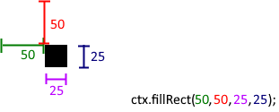

Day 4
Input Elements
Inputs and the "Value" Attribute
<input> elements are among the most important of HTML elements. They allow the user to supply text, numbers, files, colors, and much more, data that can all be accessed from JavaScript.
As you might remember, <input>s have a value attribute containing whatever data has been supplied to them. This same data can be accessed from JavaScript with a property of the same name.
The "Change" Event
The change event is fired from an <input> element when the user exits its editable region after making a change to its value. The corresponding property for the change event is onchange (just like onclick for the click event). Remember that, in general, the property name will have "on" before the event name.
Type the following into JSFiddle, run it, and see what happens when you type into the text box:
<!DOCTYPE html>
<html>
<head>
</head>
<body>
<input value="change my text!" id="input">
</body>
</html>
let input = document.getElementById("input");
input.onchange = function () {
console.log(input.value);
}
The "Input" Event
let input = document.getElementById("input");
input.oninput = function () {
console.log(input.value);
}
Now change the onchange to oninput (as shown above), re-run the program, and try typing again. Notice the difference in what appears in the console? The input event is triggered every time a character is entered.
HTML5 Canvas API
Okay, this is where things get interesting. The HTML5 Canvas API is basically an image editor you control with code. You can draw rectangles, lines, circles, images, text, and a whole lot of other stuff. That might seem simple and rather boring, but combine some of those elements together and you can achieve amazing results. But first...
What is an "API" anyway?
"API" is an acronym for Application Programming Interface. It's basically any way of controlling something with code. That description is vague for a reason. Compare it to a GUI (graphical user interface), which I'm sure you're familiar with. GUIs let you control things with buttons, dials, inputs, and all those other interactive visual elements. An API is like a GUI, except all the, buttons and dials and whatnot are replaced with code. Interestingly, virtually all GUIs just control an API under-the-hood.
And funnily enough, you've already been working with APIs. console.log? That's the console API. document.getElementById? That's part of the HTML DOM (Document Object Model) API. And now you're going to learn about the canvas API.
The Canvas API
So now that we've gotten that out of the way, let's get back to the canvas API, which is- again- essentially an image editor you control with code. First, we need to set up the canvas element itself, like so:
<!DOCTYPE html>
<html>
<head>
</head>
<body>
<canvas id="canvas" width="512" height="512"></canvas>
</body>
</html>
Here we have two new attributes, the width and the height attribute. These describe the width and the height of the canvas in pixels. It's important to note that while by default, these correspond to the actual size of the canvas as it appears on the screen, CSS can allow the apparent size to differ. However, the actual size of the underlying image, in terms of pixels, will always be determined by the width and height attributes.
With all that out of the way, we can start work on the JavaScript:
let canvas = document.getElementById("canvas");
let ctx = canvas.getContext("2d");
First line we've done many times before- getting an HTML element with document.getElementById. The second line is something new. HTML canvas element objects have a special function called getContext that returns a canvas context. A canvas context is a different object whose properties consist of many of the functions (among other things) that allow you to draw on a canvas.
The First Square
Let's start out by drawing a square. Change the JavaScript to the following (first two lines are the same):
let canvas = document.getElementById("canvas");
let ctx = canvas.getContext("2d");
ctx.fillRect(50, 50, 25, 25);
Here's what the result should look like:
Canvas Coordinate System
The fillRect function of the canvas context- as you might expect- draws a filled rectangle. However, it's important to note what each of its four parameters do. To do this, we need to understand the coordinate system that the canvas uses. Firstly, all units are generally pixels. Secondly, and most importantly, I'd say, the origin is defined as the top-left corner. The positive x-direction is towards the right (as you might expect), but- strangely- the positive y-direction is downward. Here's an illustration that demonstrates this coordinate system on a 512-by-512-pixel canvas (this is by no means the only resolution you can use, however):

Now this might seem strange and unintuitive to you. Why in the world do Y-values increase as you go down? However, in the context of web pages, it makes a whole lot more sense. Web pages, after all, always start scrolled to the top. The top of the page is the default and the beginning- in other words, the origin. This is even reflected by one of the primary purposes of websites: reading textual articles (like you're doing here!). In English at least, text starts at the top and goes down, just like the canvas coordinate system. This also allows the canvas coordinate system to be consistent- you'll eventually find that position-related properties of HTML elements use the same coordinate system.
Okay, back to the square.
Let's return to the square. As a reminder, here's our HTML and JavaScript:
<!DOCTYPE html>
<html>
<head>
</head>
<body>
<canvas id="canvas" width="512" height="512"></canvas>
</body>
</html>
let canvas = document.getElementById("canvas");
let ctx = canvas.getContext("2d");
ctx.fillRect(50, 50, 25, 25);
The first two parameters describe the coordinates of the top-left corner of the square. The last two describe the square's width and height. Here's an illustration that shows how each parameter works:
Keep in mind that other canvas drawing functions won't have documentation to this level of detail, so remember to learn to experiment with them if the documentation you do get is insufficient. In fact, this is often true for APIs in general.
Covering the Canvas
Given that the canvas is 512 by 512 pixels, change the JavaScript to draw a rectangle that covers the whole canvas (and nothing more). Solution is below:
let canvas = document.getElementById("canvas");
let ctx = canvas.getContext("2d");
ctx.fillRect(0, 0, 512, 512);
Rectangle Outline
Draw the outline of a rectangle (not a filled rectangle). The rectangle's top right corner should be at (100, 150), its width should be 50 pixels, and its height should be 200 pixels. This is another one of those "google it yourself" things! Remember that- in general- outlines are called "strokes", and the interiors of shapes are called "fills". As such, you can search for "HTML5 canvas stroke rectangle" if you're unsure as to what to search. Here is what it should look like:
Solution:
let canvas = document.getElementById("canvas");
let ctx = canvas.getContext("2d");
ctx.strokeRect(100, 150, 50, 200);
Challenge: Smiley Faces
Create a function that draws a smiley face on the canvas out of rectangles, at the given x and y position (use function parameters to specify the position). If you feel like all this rectangle stuff is too easy, try it with some other canvas methods (methods are simply functions that are also properties of an object). Remember to test the function (preferably multiple times at different positions) to make sure that it works!